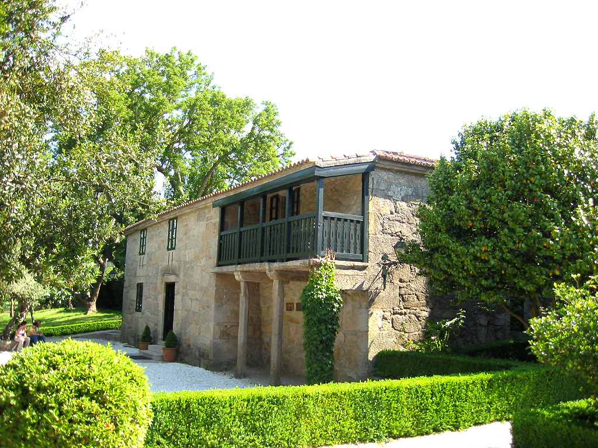

María Rosalía Rita de Castro (Santiago de Compostela, 23 de febrero de 1837-Padrón, 15 de julio de 1885) fue una poetisa y novelista española que escribió tanto en gallego como en castellano. Considerada entre los grandes poetas de la literatura española del siglo xix,1 representa junto con Eduardo Pondal y Curros Enríquez una de las figuras emblemáticas del Rexurdimento gallego,2 no solo por su aportación literaria en general y por el hecho de que sus Cantares gallegos3 sean entendidos como la primera gran obra de la literatura gallega contemporánea, sino por el proceso de sacralización al que fue sometida y que acabó por convertirla en encarnación y símbolo del pueblo gallego.4 Además, es considerada junto con Gustavo Adolfo Bécquer, la precursora de la poesía española moderna.5
Escribir en gallego en el siglo xix, es decir, en la época en la que vivió Rosalía, no resultaba nada fácil por un gran número de razones. La mayor parte de ellas estaba ligada al pensamiento y estructuración de la sociedad del momento, en la que la lengua gallega estaba muy desprestigiada y menospreciada, cada vez más distante de aquella época en la que había sido el idioma de la lírica galaicoportuguesa. Toda la tradición escrita se había perdido, por lo que se hacía necesario comenzar desde cero rompiendo con el sentimiento de desprecio e indiferencia hacia la lengua gallega, pero pocos eran los que se planteaban la tarea, pues esta habría constituido un motivo de desprestigio social. En un ambiente en el que el castellano era la lengua de la cultura y la lengua protegida de la clase minoritaria dominante, Rosalía de Castro otorgó prestigio al gallego al usarlo como vehículo de su obra Cantares gallegos y afianzó así el renacer cultural de la lengua.
Aunque fue una asidua cultivadora de la prosa, Rosalía sobresalió en el campo de la poesía, a través de la creación de las que pueden ser consideradas sus tres obras clave: Cantares gallegos, Follas novas y En las orillas del Sar. La primera de ellas representa un canto colectivo, artísticamente logrado, que sirvió de espejo dignificante a la comunidad gallega al emplearse su lengua y tradiciones. También fue útil para proseguir con la tendencia tímidamente iniciada por el pontevedrés Xoán Manuel Pintos con su obra titulada A gaita galega (1853).
En la segunda obra, la autora escribió una poesía de gran profundidad, que emplea el símbolo como método para expresar lo inefable y que revela la plurisignificación propia de la más elevada poesía. Junto con las obras Aires da miña terra (Curros Enríquez), Saudades gallegas (Valentín Lamas Carvajal) y Maxina ou a filla espúrea (Marcial Valladares Núñez) completa el conjunto de obras publicadas en la década de 1880 que hicieron de estos años una etapa clave en el desarrollo de la literatura gallega, aunque la obra de Rosalía siempre mantuvo una posición predominante con respecto al resto.
Finalmente, En las orillas del Sar manifiesta un tono trágico que encaja con las duras circunstancias que rodearon los últimos años de la vida de Rosalía. Escrita en castellano, la obra ahonda en el lirismo subjetivo propio de Follas novas al mismo tiempo que se consolidan las formas métricas que allí apuntaban. Inicialmente calificado de precursor y obviado por la crítica de su tiempo, hoy en día existen diferentes estudiosos que lo consideran como la principal creación poética de todo el siglo xix.
En la actualidad, la figura de Rosalía de Castro y sus creaciones literarias continúan siendo objeto de una abundante bibliografía y recibiendo una constante atención crítica, tanto en España como en el extranjero. Es tal la aceptación y el interés que las obras de esta escritora despiertan en el mundo, que en las últimas décadas sus poemas han sido traducidos a idiomas como el francés, el alemán, el ruso y el japonés.
Numero: 678 97 34 42
Ubicacion: calle de las delicias portal 2
Correo: rosaliadecastro92@gmail.com
